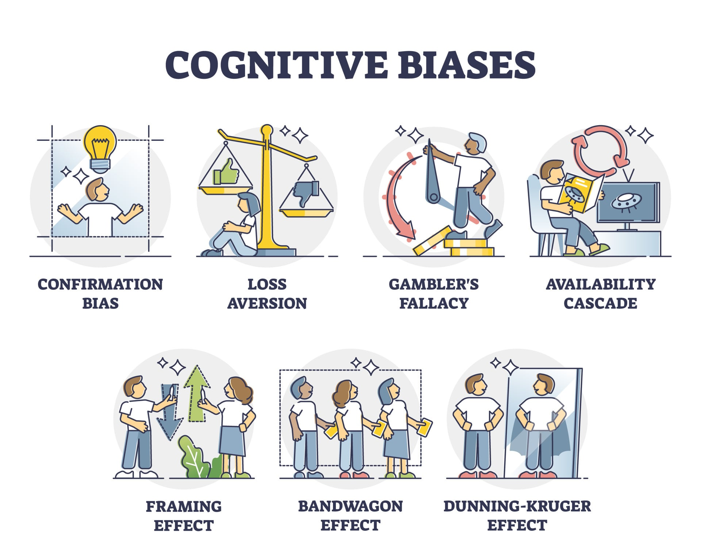
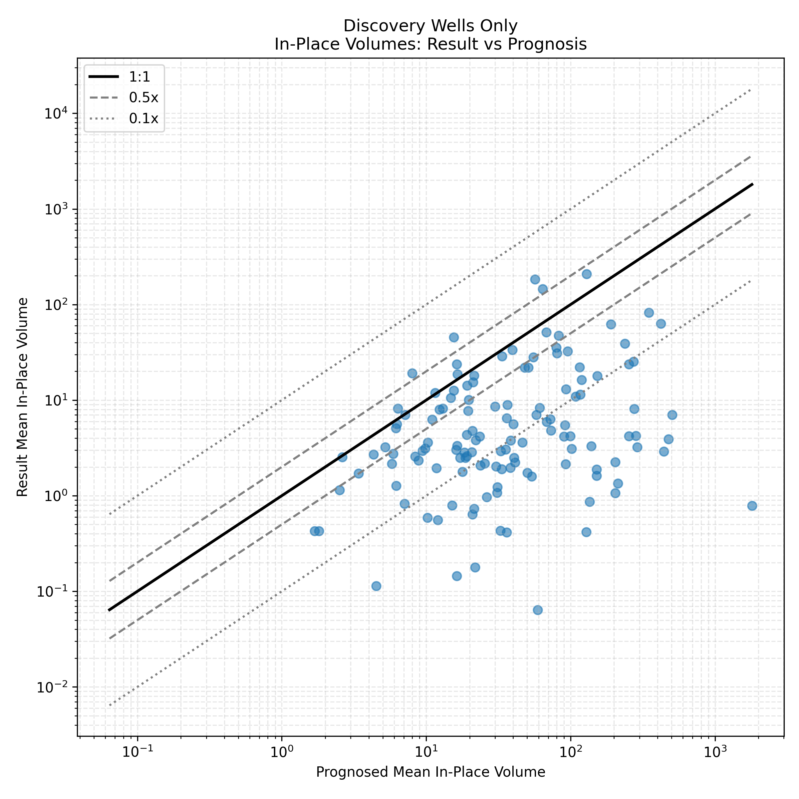
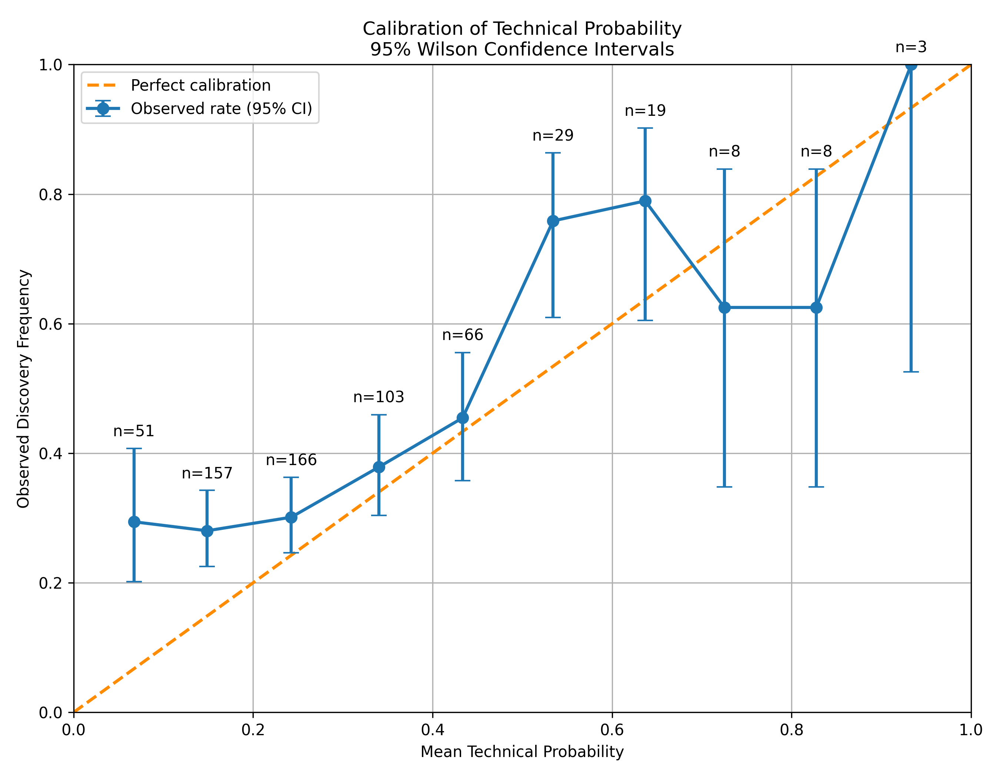
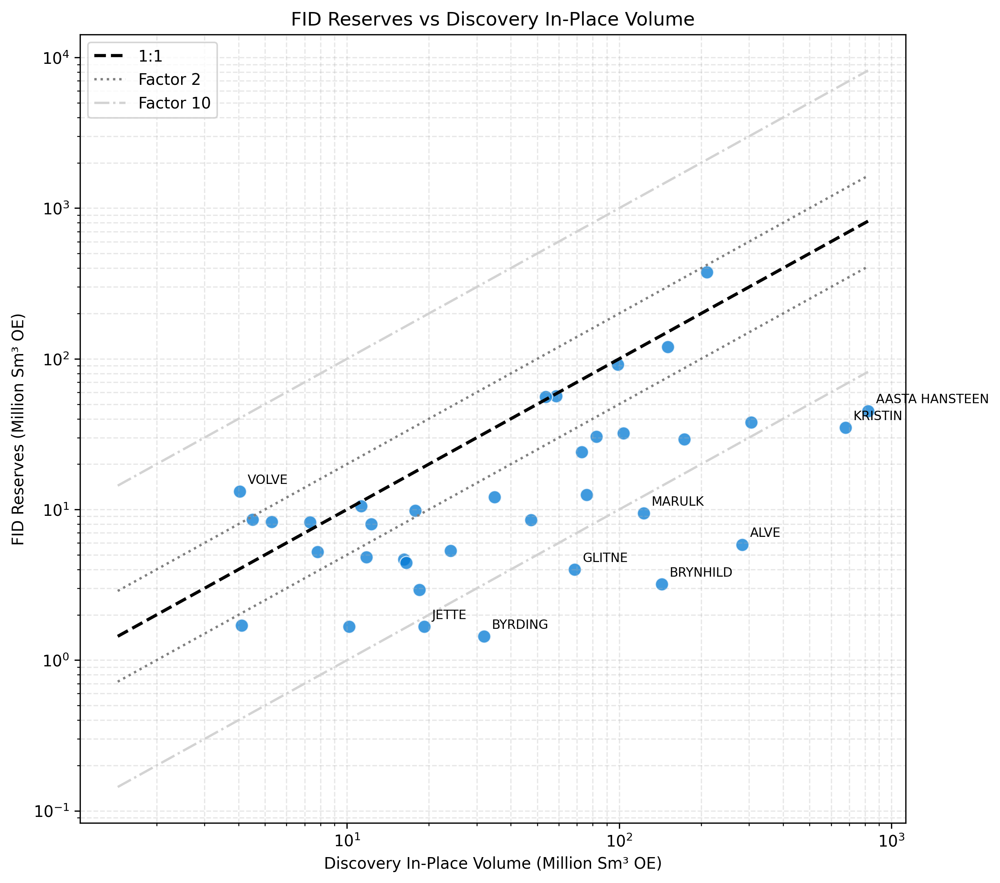
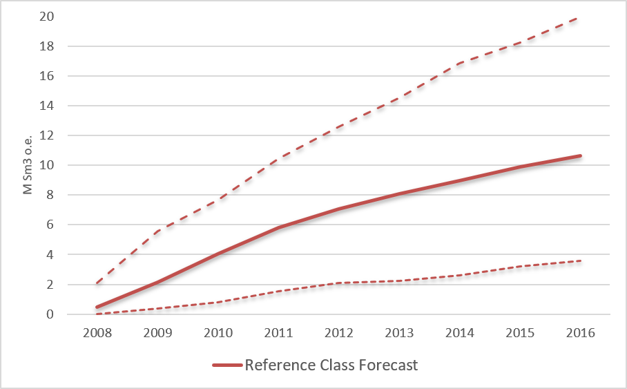
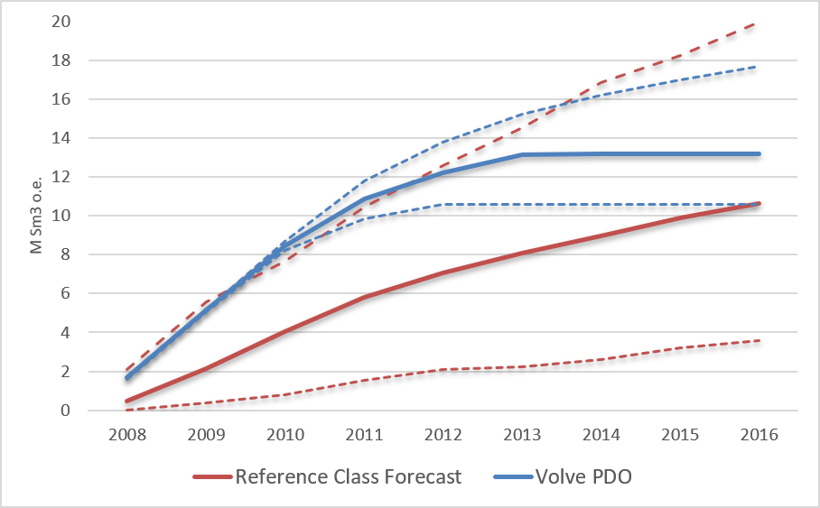

Bias Busting Decision Analysis

Our understanding of in-place and recoverable volumes should improve over time
But is this really the case?
Volumes
Time/Information
Pre-drill
Post-drill
Concept select
Production start
SODIR Data: Optimism and Overconfidence Bias is only Getting Worse



Technical Discovery Probabilities
In-Place Volumes:
Result vs Prognosis
Recoverable Volumes at FID vs In-Place
Main idea: we are not able/incentivized to communicate real uncertainties across silos -> need to take a sledgehammer approach
An Improved Decision Analysis Workflow


Reference Class Forecast for Volve
Empirical uncertainty range

RCF vs PDO for Volve
PDO uncertainty range

RCF vs PDO vs Actual for Volve
First use

The 2005 plan and the modified plan

What changes
| 2005 plan | Modified plan | |
|---|---|---|
| Concept | Leased jack-up, storage vessel, gas to Sleipner A | Unchanged |
| Volume basis | 27.5 million Sm3 (mean) | East 19.2 committed; West 0.5–15.2 as an option |
| Wells at sanction | 3 producers, 3 injectors | 2 + 2; western pair held back |
| West | Drilled with the rest | Pilot first; drill the pair above 1.7 million Sm3 |
| Capacity | 9 000 Sm3/d | Unchanged |
| Reserves told to owners | 11.4 | about 10, low case 7.9 |